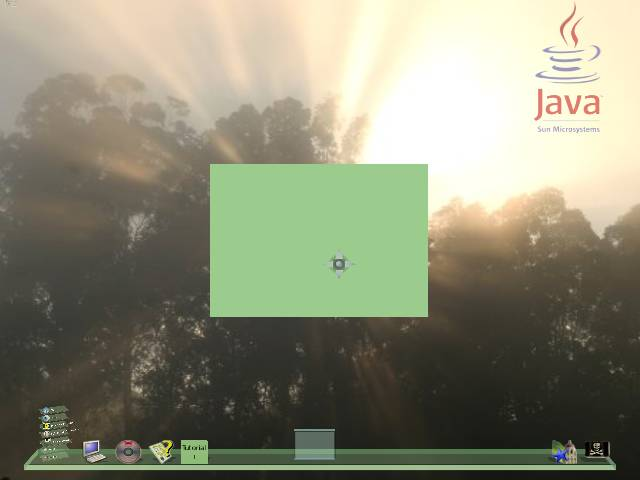

This tutorial is based upon the tutorial written by Hideya Kawahara.
To demonstrate the basic steps of creating a 3D application within the lg3d framework
To use this tutorial you will need a functional installation of the of
LG3D and your environment configured for LG3D development. Follow the
"Project Looking Glass Developer's Guide"
for installation and configuration instructions.
If you have been following the previous versions of the tutorials, you will note some changes. Throughout this tutorial I will note the changes, and advantages of the changes made to the API. The 0.6.2 version marks a major change in the API to support many animation tasks, and these have been further refined in the version 0.7.0 release.
Now, let's try to put a box of 8cm x 6cm x 4cm at the center of this application. Predefined shapes found under org.jdesktop.lg3d.utils.shape are handy for this purpose.
By the way, what color would you like to paint it? Let's try pale green for this example. Therefore we need to create an appearance object to handle the color of the box. The API also provides a handy class to specify color, which is SimpleAppearance. Additionally you can specify the object's color in a more detailed manner, including shininess and what color it shines, translucency and textures applied to it. You can find out more by looking at the API documentation for Appearance, Material and Texture.
Now that we have a default appearance, we can create the box of 8cm x 6cm x 4cm. Note that we need to specify half the length of each dimension to the constructor of the predefined Box class. It creates a box that lies within the bounding box, [-x, -y, -z] and [x, y, z], where x, y and z are the first three arguments to the constructor.
Project Looking Glass 3D APIs are based on Java 3D. In Java 3D, by default, the metric system is used, where one (1) unit equals one meter. And if configured correctly, by drawing an object of size 0.02 units turns into an object approximately 2cm in size on the screen.
Please note that the default configuration for lg3d is for a perspective view, therefore the drawing size varies depending upon how far away, or how close the object is. By default, the 3D scene manager of lg3d will position the object at a reasonable position where the size is close to the size intended.
Put the box in the container
To display the box on the screen, we must add the box to the top level container. The box cannot be added directly to the Frame3D, only a Component3D can be added to Frame3Ds (this functionality is inherited from Container3D). Component3D is the base component for all the lg3d components. One component can have multiple Shape3D objects to define its shape (note that Box inherits Shape3D), and a Frame3D can host multiple Component3Ds (including nested Container3Ds).
Therefore we must create a Component3D.
Component3D comp = new Component3D();
Then add the box to the Component3D.
comp.addChild(box);
Now the Component3D can be added to the root container.
frame3d.addChild(comp);
Initialize the container
Change Note:The call to setCapabilities() is not longer needed, default capabilities are automatically set, and applied to any children when they are added to the Frame3D
To assist the SceneManager (at least in the default scene manager - GlassySceneManager) it is useful to set the size hint for the Frame3D. This is used by the SceneManager to arrange 3D applications in the 3D space it manages.
Change Note:The naming scheme has been changed from previous versions of API to follow the Swing API standards, therefore setSize has been changed to the more appropriate setPreferredSize(Vector3f).
frame3d.setPreferredSize(new Vector3f(0.08f, 0.06f, 0.04f));
To make the frame visible two steps are required.
First, the frame needs to be added to the scenegraph. The changeEnabled(boolean) call does this. More precisely, the call initiates interaction with the 3D SceneManager and the manager handles the details of the policy for presenting the application (e.g. location, size, etc.).
Change note: Previously this was done by the setActive(boolean) method. The function call has been renamed to follow standard Java practices of using setEnabled(boolean) to enable a component. The method setEnabled(boolean) can also be used in the same way, however using changeEnabled(boolean) allows for animated changes of enabled status, whereas setEnabled(boolean) will work immediately. This naming convention is standard across the API.
frame3d.changeEnabled(true);
Second, although the frame is active, it must also be made visible. Note setVisible(boolean) is fairly light-weight compared to the changeEnabled() call, therefore changeVisible() should be used to temporarily hide an object.
Change note:Like the changeEnabled note above, this has been changed to allow for animations while making the Frame3D visible within the SceneManager.
frame3d.changeVisible(true);
Compile the code
We have finished writing the code. The full version includes the required import statements, and various constructor and main methods. Download Tutorial1.java
Now we need to compile the source file. The tutorial requires the lg3d core library and Java 1.5 to compile. The core library can be found under the lib directory of the lg3d distribution (replace $LG3DHOME with the path to the lg3d distribution).
javac -cp "$LG3DHOME/lib/lg3d-core.jar" Tutorial1.java
Package the Tutorial to run in LG3D
Release 0.8.0 introduced a new menu system for LG3D. To use the new menu system, each program must have a .lgcfg file. This file tells Looking Glass where in the menu system the program should be.
For LG3D to be able to find your program, it should be in a .jar file in the ext/app directory. The jar file's Manifest file must specify a main class and point to the application's lgcfg file.
We will create a simple manifest file to run this application. Edit a file Tutorial1.MF:
Main-Class: Tutorial1
Config-File: Tutorial1.lgcfg
Important: There must be a blank line at the end of this file.
These parameters mean:
- Main-Class: This is the standard manifest parameter that specifies the class file to execute when executing a jar file (e.g. java -jar syntax).
- Config-File: The lgcfg file that tells Looking Glass where to put your program's icon.
Now for the lgcfg file, Tutorial1.lgcfg. This is a simple XML file, and we will use it to just put the application on the taskbar where it can be easily reached.
<?xml version="1.0" encoding="UTF-8"?>
<java version="1.5.0" class="java.beans.XMLDecoder">
<object class="org.jdesktop.lg3d.scenemanager.config.ApplicationDescription">
<void property="exec">
<string>java Tutorial1</string>
</void>
<void property="iconFilename">
<string>tutorial1.png</string>
</void>
<void property="name">
<string>Tutorial 1</string>
</void>
<void property="classpathJars">
<string>Tutorial1.jar</string>
</void>
</object>
</java>
Under the "exec" property is the command to run the program. In this case, it is the java command followed by the fully qualified name of the application's main class.
The "iconFilename" property is the name of the icon to use for the program. Recent versions of Looking Glass no longer provide default icons; you must create your own.
The "name" property tells Looking Glass what the name of your program is.
The "classpathJars" property tells the Looking Glass classloaders what jar file or files contain your program.
Next we create a jar file using the manifiest file and the Tutorial1.class file, along with the .lgcfg file and the .png icon file.
jar cmvf Tutorial1.MF Tutorial1.jar Tutorial1.class Tutorial1.lgcfg tutorial1.png
Copy the Tutorial1.jar to $LG3DHOME/ext/app creating the directory if it does not exist.
Run our application
Now that the jar file is copied into the ext/app directory you just need to start lg3d as normal, and the tutorial will be added to the taskbar.
./lg3d-dev
Click on the Tutorial1 button on the taskbar. The lg3d desktop should be displayed with a pale green screen box in the center (as you see below). In actual fact, only a pale green square can be seen - in the next tutorial the box will be rotated to make it look like a box.

{kind=link}